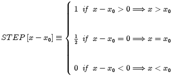

The amplitude of the STEP[x] function for negative x is 0, the amplitude the the right of the origin is 1, and the amplitude at the origin is the average of the adjacent amplitudes
The signum function may be translated by inserting an additive constant factor into the argument:

The step function may also be defined in terms of the signum function:

Parameters:
Scaling the argument of STEP[x] by a real-valued factor b has no effect on the amplitude at any location.
Support: semi-infinite
Area: infinite
Symmetry: neither even nor odd
Read more about the step function at: